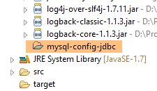
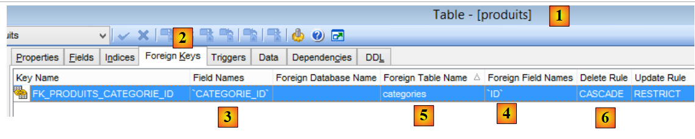
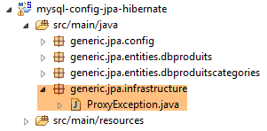
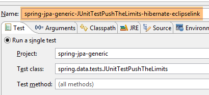
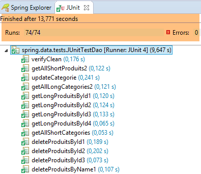

6. Spring Data JPA Hibernate
6.1. مقدمة
سنستأنف العمل على قاعدة البيانات [dbproduitscategories] التي يديرها المشروع [spring-jdbc-04]، وسنقوم بتنفيذ الواجهتين [IDao<Categorie>, IDao<Produit>] المحددتين في هذا المشروع. سيتيح لنا ذلك عدة أمور:
- مقارنة أكواد التنفيذ؛
- استخدام نفس طبقة الاختبارات؛
- مقارنة أداء كلا التنفيذين؛
 |
- يتم تنفيذ طبقة [JDBC] بواسطة المشروع [mysql-config-jdbc] الذي تمت دراسته في الفقرة 3.3؛
ننتقل الآن إلى الطبقات الأخرى.
6.2. إعداد بيئة العمل
باستخدام STS، قم باستيراد المشروع [mysl-config-jpa-hibernate] [1] الموجود في المجلد [<exemples>/spring-database-config/mysql/eclipse] [2]:
 |
يقوم هذا المشروع بتكوين الطبقة [Spring JPA Hibernate] للمشروع. لكل تنفيذ JPA مشروع تكوين خاص به.
ثم قم باستيراد المشروع [spring-jpa-generic] [1] الموجود في المجلد [<exemples>/spring-database-generic/spring-jpa] [2]:
 |
بعد ذلك، أعد تعيين بيئة Maven (Alt-F5) لجميع المشاريع الموجودة في [Package Explorer]:
 |
ثم، للتحقق من بيئة العمل، قم بتنفيذ التكوين المسمى [spring-jpa-generic-JUnitTestDao-hibernate]:
 |
تقوم هذه التهيئة بتشغيل الاختبار [JUnitTestDao]. يجب أن ينجح هذا الاختبار:
 |
6.3. مشروع تكوين الطبقة JPA
 |
يهدف هذا المشروع إلى تكوين الطبقة JPA في البنية التالية:
 |
6.3.1. تكوين Maven
المشروع هو مشروع Maven ويتم تكوينه بواسطة الملف [pom.xml] التالي:
<project xsi:schemaLocation="http://maven.apache.org/POM/4.0.0 http://maven.apache.org/xsd/maven-4.0.0.xsd"
xmlns="http://maven.apache.org/POM/4.0.0" xmlns:xsi="http://www.w3.org/2001/XMLSchema-instance">
<modelVersion>4.0.0</modelVersion>
<groupId>dvp.spring.database</groupId>
<artifactId>generic-config-jpa</artifactId>
<version>0.0.1-SNAPSHOT</version>
<name>configuration mysql openjpa</name>
<parent>
<groupId>org.springframework.boot</groupId>
<artifactId>spring-boot-starter-parent</artifactId>
<version>1.2.3.RELEASE</version>
</parent>
<dependencies>
<!-- التبعيات المتغيرة ********************************************** -->
<!-- مزود JPA -->
<dependency>
<groupId>org.hibernate</groupId>
<artifactId>hibernate-entitymanager</artifactId>
</dependency>
<!-- التبعيات الثابتة ********************************************** -->
<!-- Spring Data -->
<dependency>
<groupId>org.springframework.data</groupId>
<artifactId>spring-data-jpa</artifactId>
</dependency>
<!-- Spring Context -->
<!-- التكوين الموروث JDBC -->
<dependency>
<groupId>dvp.spring.database</groupId>
<artifactId>generic-config-jdbc</artifactId>
<version>0.0.1-SNAPSHOT</version>
<exclusions>
<exclusion>
<groupId>org.springframework.boot</groupId>
<artifactId>spring-boot-starter-jdbc</artifactId>
</exclusion>
</exclusions>
</dependency>
</dependencies>
<properties>
<project.build.sourceEncoding>UTF-8</project.build.sourceEncoding>
<java.version>1.7</java.version>
</properties>
<build>
<plugins>
<plugin>
<groupId>org.apache.maven.plugins</groupId>
<artifactId>maven-surefire-plugin</artifactId>
<version>2.18.1</version>
</plugin>
</plugins>
</build>
</project>
- الأسطر 5-7: عنصر Maven الذي تم إنشاؤه بواسطة هذا المشروع. ستستخدم مشاريع تكوين التنفيذات الأخرى JPA (Eclipselink و OpenJpa) هذا العنصر نفسه. وهذا يعني أنه لا يمكن أن يكون سوى مشروع واحد من هذه المشاريع نشطًا في وقت معين. لذلك يجب تجنب وجودها جميعًا في [Package Explorer]. يكفي وجود مشروع واحد منها فقط؛
- الأسطر 10-14: مشروع Maven الأصلي الذي يحدد إصدار معظم التبعيات اللازمة للمشروع؛
- الأسطر 19-22: مكتبة Hibernate؛
- الأسطر 25-28: مكتبة Spring Data؛
- الأسطر 32-34: يعتمد مشروع تكوين الطبقة JPA على مشروع تكوين الطبقة JDBC الذي يحدد، من بين أمور أخرى، برنامج التشغيل JDBC الخاص بـ SGBD المستخدم وبيانات الاتصال بقاعدة البيانات المطلوب استخدامها؛
- الأسطر 35-39: يتضمن مشروع تكوين الطبقة JDBC المكتبة [Spring JDBC] التي تم استبدالها هنا بالمكتبة [Spring Data JPA]. لذلك يُنصح بعدم تضمينها في تبعيات المشروع. ومع ذلك، فإن بقاءها لن يتسبب في حدوث أخطاء؛
وفي النهاية، تكون تبعيات المشروع كما يلي:
 |
6.3.2. تكوين Spring
 |
تقوم الفئة [ConfigJpa] بتكوين مشروع Spring:
package generic.jpa.config;
import javax.persistence.EntityManagerFactory;
import generic.jdbc.config.ConfigJdbc;
import org.apache.tomcat.jdbc.pool.DataSource;
import org.springframework.context.annotation.Bean;
import org.springframework.context.annotation.Configuration;
import org.springframework.context.annotation.Import;
import org.springframework.orm.jpa.JpaTransactionManager;
import org.springframework.orm.jpa.JpaVendorAdapter;
import org.springframework.orm.jpa.LocalContainerEntityManagerFactoryBean;
import org.springframework.orm.jpa.vendor.Database;
import org.springframework.orm.jpa.vendor.HibernateJpaVendorAdapter;
import org.springframework.transaction.PlatformTransactionManager;
@Configuration
@Import({ ConfigJdbc.class })
public class ConfigJpa {
// المزود JPA
@Bean
public JpaVendorAdapter jpaVendorAdapter() {
HibernateJpaVendorAdapter hibernateJpaVendorAdapter = new HibernateJpaVendorAdapter();
hibernateJpaVendorAdapter.setShowSql(false);
hibernateJpaVendorAdapter.setDatabase(Database.MYSQL);
hibernateJpaVendorAdapter.setGenerateDdl(true);
return hibernateJpaVendorAdapter;
}
// حزم كيانات JPA
public final static String[] ENTITIES_PACKAGES = { "generic.jpa.entities.dbproduitscategories" };
// مصدر البيانات
@Bean
public DataSource dataSource() {
// مصدر البيانات TomcatJdbc
DataSource dataSource = new DataSource();
// تكوين الوصول JDBC
dataSource.setDriverClassName(ConfigJdbc.DRIVER_CLASSNAME);
dataSource.setUsername(ConfigJdbc.USER_DBPRODUITSCATEGORIES);
dataSource.setPassword(ConfigJdbc.PASSWD_DBPRODUITSCATEGORIES);
dataSource.setUrl(ConfigJdbc.URL_DBPRODUITSCATEGORIES);
// الاتصالات المفتوحة في البداية
dataSource.setInitialSize(5);
// النتيجة
return dataSource;
}
// EntityManagerFactory
@Bean
public EntityManagerFactory entityManagerFactory(JpaVendorAdapter jpaVendorAdapter, DataSource dataSource) {
LocalContainerEntityManagerFactoryBean factory = new LocalContainerEntityManagerFactoryBean();
factory.setJpaVendorAdapter(jpaVendorAdapter);
factory.setPackagesToScan(ENTITIES_PACKAGES);
factory.setDataSource(dataSource);
factory.afterPropertiesSet();
return factory.getObject();
}
// مدير المعاملات
@Bean
public PlatformTransactionManager transactionManager(EntityManagerFactory entityManagerFactory) {
JpaTransactionManager txManager = new JpaTransactionManager();
txManager.setEntityManagerFactory(entityManagerFactory);
return txManager;
}
}
- السطر 18: الفئة هي فئة تكوين Spring؛
- السطر 19: يستورد هذا السطر «البيانات» (beans) المُعرَّفة بواسطة فئة التكوين [ConfigJdbc] التي استُخدمت لتكوين مشروع Spring [mysql-config-jdbc]. وهي عبارة عن المرشحات jSON؛
- الأسطر 23-30: تحدد التنفيذ JPA المستخدم، وهو هنا تنفيذ Hibernate (السطر 25)؛
- السطر 26: يمكن اختيار عرض العمليات SQL التي ينفذها تطبيق Hibernate أو عدم عرضها؛
- السطر 27: يتم إعلام Hibernate بـ SGBD المتصل. هذا التكوين مهم. فهو يسمح لـ Hibernate باستخدام لهجة SQL الخاصة بـ SGBD و MySQL، بما في ذلك الجوانب الخاصة بها. بالإضافة إلى ذلك، يزوده هذا الإعداد بمعلومات عن أنواع SQL وكائنات SGBD التي سيتمكن من استخدامها. إن هذه القدرة التي يتمتع بها التنفيذ JPA على التكيف مع SGBD محدد هي التي تمنحه قابلية نقل كبيرة بين SGBD؛
- السطر 28: قد يقوم Hibernate بإنشاء جداول قاعدة البيانات المستهدفة من الكيانات JPA التي سيجدها، أو قد لا يقوم بذلك. ولا يتم هذا الإنشاء إلا في حالة عدم وجود الجداول. أما إذا كانت موجودة بالفعل، فلن يتم اتخاذ أي إجراء. سنستخدم هذه القدرة على إنشاء الجداول عندما نوضح كيفية إنشاء البرامج النصية SQL الخاصة بإنشاء قواعد البيانات المختلفة المستخدمة في هذا المستند؛
- السطر 33: الحزمة التي توجد فيها الكيانات JPA التابعة لقاعدة البيانات [dbproduitscategories]؛
- الأسطر 36-49: مصدر البيانات [tomcat-jdbc] المرتبط بقاعدة البيانات [dbproduitscategories]؛
- الأسطر 52-60: الكائن المسمى [entityManagerFactory] (يجب أن يكون هذا هو اسمه بالضبط) هو الكائن الذي سيقوم بإنشاء الكائن [EntityManager] الذي يدير سياق الاستمرارية JPA. تمر جميع عمليات JPA عبره. إن استخدام [Spring Data JPA] يعني أننا لن نستخدم هذا الكائن بأنفسنا أبدًا. ومع ذلك، يتعين علينا تهيئته. فهو يحتاج إلى معرفة الأمور التالية:
- التنفيذ JPA المستخدم (السطر 55)؛
- مصدر البيانات المستخدم (السطر 57)؛
- الكيانات JPA الخاصة بهذا المصدر (السطر 56)؛
- السطر 58: يقوم بتهيئة EntityManager باستخدام هذه المعلومات؛
- السطر 59: يُرجع الكائن الفردي [entityManagerFactory]؛
- الأسطر 63-68: تحدد مدير المعاملات. يجب أن يُسمى [transactionManager]؛
- السطر 65: يتم إنشاء مدير المعاملات JPA؛
- السطر 66: يتم ربطه بمصدر البيانات الموجود في السطر 37 عبر الكائن [entityManagerFactory] (السطران 53 و57)؛
لا يعتمد سوى «البيان» الموجود في الأسطر 23-30 على التنفيذ JPA المستخدم. وتعتمد «البيانات» الأخرى بعد ذلك عليه.
6.3.3. كيانات طبقة [JPA]
 |
 |
قاعدة البيانات المستهدفة هي قاعدة البيانات [dbproduitscategories] مع الجدولين التابعين لها [CATEGORIES] و [PRODUITS]. وقد رأينا أنها تحتوي أيضًا على ثلاث جداول أخرى هي [USERS, ROLES, USERS_ROLES]، والتي ستُستخدم لتأمين خدمة الويب التي سيتم نشرها على الويب. وسنتجاهل هذه الجداول في الوقت الحالي. وللتذكير، إليكم بنية الجدولين [CATEGORIES] و [PRODUITS]:
أما الجدول [PRODUITS] فهو كما يلي:
 |
- [ID]: المفتاح الأساسي الذي يتم زيادة قيمته تلقائيًا للجدول [2]؛
- [NOM]: الاسم الفريد للمنتج [4]؛
- [PRIX]: سعر المنتج؛
- [DESCRIPTION]: وصف المنتج؛
- [VERSIONING] هو رقم إصدار المنتج. إصداره الأولي هو 1 [3]. في كل مرة يتم فيها تعديل المنتج، سيتم زيادة رقم إصداره بواسطة البرنامج الذي يستخدم الجدول؛
- [CATEGORIE_ID]: المفتاح الخارجي في الجدول [CATEGORIES] لتحديد الفئة التي ينتمي إليها المنتج؛
 |
- في [1-3]، المفتاح الأجنبي [CATEGORIE_ID] من الجدول [PRODUITS]. وهي تستهدف العمود [ID] في الجدول [CATEGORIES] [4-5]؛
- عند حذف فئة ما، يتم حذف جميع المنتجات المرتبطة بها أيضًا [6]. من المهم ملاحظة هذه النقطة لأنها تُستخدم في إنشاء الطبقة [DAO] التي تستفيد من قاعدة البيانات [dbproduitscategories]؛
جدول الفئات [CATEGORIES] هو كما يلي:
 |
- [ID]: المفتاح الأساسي الذي يتم زيادة قيمته تلقائيًا؛
- [VERSIONING]: رقم إصدار الفئة؛
- [NOM]: الاسم الفريد للفئة؛
سنقوم الآن بوصف الكيانات JPA و [Produit] و [Categorie]، وهي صور من الجداول [PRODUITS] و [CATEGORIES].
|
6.3.3.1. الواجهة [AbstractCoreEntity]
يتم تنفيذ واجهة [AbstractCoreEntity] بواسطة الكيانات JPA و[Categorie] و[Produit]:
package generic.jpa.entities.dbproduitscategories;
public interface AbstractCoreEntity {
// دالات الاسترجاع والتعيين للحقول [id]، [version]، [entityType]
public Long getId();
public void setId(Long id);
public Long getVersion();
public void setVersion(Long version);
public enum EntityType {
PROXY, POJO
}
public EntityType getEntityType();
public void setEntityType(EntityType entityType);
}
هذه الواجهة، التي يتم تنفيذها بواسطة الكيانين JPA، تُستخدم ببساطة لإدراج الطرق الخاصة بقراءة/كتابة الحقول [id] و[version] و[entityType] الخاصة بهذين الكيانين. سيتم شرح دور الحقل [entityType] لاحقًا؛
6.3.3.2. الكيان JPA [Produit]
الفئة [Produit] هي الكيان JPA المرتبط بصف في الجدول [PRODUITS]:
 |
package generic.jpa.entities.dbproduitscategories;
import generic.jdbc.config.ConfigJdbc;
import generic.jpa.infrastructure.ProxyException;
import javax.persistence.Column;
import javax.persistence.Entity;
import javax.persistence.FetchType;
import javax.persistence.GeneratedValue;
import javax.persistence.GenerationType;
import javax.persistence.Id;
import javax.persistence.JoinColumn;
import javax.persistence.ManyToOne;
import javax.persistence.Table;
import javax.persistence.Transient;
import javax.persistence.Version;
import com.fasterxml.jackson.annotation.JsonFilter;
import com.fasterxml.jackson.annotation.JsonIgnore;
@Entity
@Table(name = ConfigJdbc.TAB_PRODUITS)
@JsonFilter("jsonFilterProduit")
public class Produit implements AbstractCoreEntity {
// الخصائص
@Id
@GeneratedValue(strategy = GenerationType.IDENTITY)
@Column(name = ConfigJdbc.TAB_JPA_ID)
protected Long id;
@Version
@Column(name = ConfigJdbc.TAB_JPA_VERSIONING)
protected Long version;
@Transient
protected EntityType entityType = EntityType.POJO;
@Transient
@JsonIgnore
protected String simpleClassName = getClass().getSimpleName();
// الخصائص
@Column(name = ConfigJdbc.TAB_PRODUITS_NOM, unique = true, length = 30, nullable = false)
private String nom;
@Column(name = ConfigJdbc.TAB_PRODUITS_CATEGORIE_ID, insertable = false, updatable = false, nullable = false)
private Long idCategorie;
@Column(name = ConfigJdbc.TAB_PRODUITS_PRIX, nullable = false)
private double prix;
@Column(name = ConfigJdbc.TAB_PRODUITS_DESCRIPTION, length = 100)
private String description;
// الفئة
@ManyToOne(fetch = FetchType.LAZY)
@JoinColumn(name = ConfigJdbc.TAB_PRODUITS_CATEGORIE_ID)
private Categorie categorie;
// الشركات المصنعة
public Produit() {
}
public Produit(Long id, Long version, String nom, Long idCategorie, double prix, String description,
Categorie categorie) {
this.id = id;
this.version = version;
this.nom = nom;
this.idCategorie = idCategorie;
this.prix = prix;
this.description = description;
this.categorie = categorie;
}
// التوقيع
public String toString() {
return String.format("[id=%s, version=%s, nom=%s, prix=10.2f, desc=%s, idCategorie=%s]", id, version, nom, prix,
description, idCategorie);
}
// ------------------------------------------------------------
// إعادة التعريف [equals] و [hashcode]
@Override
public int hashCode() {
Long id = getId();
return (id != null ? id.hashCode() : 0);
}
@Override
public boolean equals(Object entity) {
if (!(entity instanceof AbstractCoreEntity)) {
return false;
}
String class1 = this.getClass().getName();
String class2 = entity.getClass().getName();
if (!class2.equals(class1)) {
return false;
}
AbstractCoreEntity other = (AbstractCoreEntity) entity;
Long id = getId();
Long otherId = other.getId();
return id != null && otherId != null && id.equals(otherId);
}
// المُستردات والمُعيّنات
...
public void setCategorie(Categorie categorie) {
// نوع الكيان
if (entityType == EntityType.PROXY) {
throw new ProxyException(1005, new RuntimeException(
"On ne peut changer la catégorie d'un produit de type [PROXY]"), simpleClassName);
}
this.categorie = categorie;
}
}
- السطر 21: التعليق التوضيحي [@Entity] يجعل الفئة [Produit] كيانًا تديره الطبقة [JPA]. يمكن أيضًا كتابة [@Entity(name="MonProduit")]، مما يمنح الكيان الاسم [MonProduit]. في حالة عدم وجود هذه المعلومة، يكون اسم الكيان هو اسم الفئة، وهو هنا [Produit]. ويصبح هذا التسمية ضروريًا عندما توجد بين الكيانات فئتان من حزم مختلفة تحملان الاسم نفسه؛
- السطر 22: يشير التعليق التوضيحي [@Table(name = "PRODUITS")] إلى أن الفئة [Produit] هي الصورة المادية لسطر في الجدول [PRODUITS] في قاعدة البيانات؛
- السطر 23: اسم المرشح jSON المراد تطبيقه على الكيان. سنرى أن الخاصية [categorie] في السطر 58 ليست متاحة دائمًا. لذلك يجب استبعادها من تمثيل الكائن jSON. ولهذا الغرض، نحتاج إلى مرشح. لذا، سنحدد في مرشح يُسمى [jsonFilterCategorie] ما إذا كنا نريد الخاصية [categorie] أم لا؛
- السطر 26: التعليق التوضيحي [@Id] يجعل الحقل المُعلَّق عليه هو الحقل المرتبط بالمفتاح الأساسي لجدول السطر 19؛
- السطر 27: يحدد التعليق التوضيحي [@GeneratedValue(strategy = GenerationType.IDENTITY)] وضع التوليد التلقائي للمفتاح الأساسي في الجدول [PRODUITS]. ويقوم السمة [strategy] بتحديد ذلك. وهناك أوضاع مختلفة:

الاستراتيجية [IDENTITY] غير متاحة لجميع نماذج SGBD. من بين الستة نماذج SGBD التي تم اختبارها، كانت هذه الاستراتيجية متاحة لنماذج SGBD و[MySQL 5, PostgreSQL 9.4, SQL Server 2014, DB2 Express-C10.5]. أما بالنسبة لنموذجي [Oracle Express 11g Release 2, Firebird 2.5.4] الآخرين، فقد كان لا بد من استخدام استراتيجية [SEQUENCE]. بالنسبة لقابلية النقل بين عمليات التنفيذ JPA، يجب عدم استخدام الاستراتيجية [AUTO] التي تترك لعملية التنفيذ JPA حرية اختيار استراتيجية إنشاء المفتاح الأساسي. وبالتالي، مع MySQL 5 والاستراتيجية [AUTO]:
- يختار Hibernate الاستراتيجية [IDENTITY] مع الوضع [AUTO_INCREMENT] للمفتاح الأساسي؛
- تختار EclipseLink الاستراتيجية [TABLE] التي تنشئ جدولًا يُسمى افتراضيًا [SEQUENCE]، والذي يجب الاستعلام عنه للحصول على المفاتيح الأولية.
في النهاية، تختلف بنية قاعدة البيانات التي تديرها هاتان العمليتان JPA عن بعضهما. فإذا تم إنشاؤها بواسطة Hibernate، فلن تكون قابلة للاستخدام بواسطة EclipseLink والعكس صحيح.
- السطر 28: تحدد التعليقة التوضيحية [@Column(name="ID"] اسم عمود الجدول [PRODUITS] المراد ربطه بالحقل [id]؛
- السطر 29: يُستخدم النوع [Long] بدلاً من [long] للمفتاح الأساسي. في الواقع، للمفاتيح الأساسية [null] معنى خاص بالنسبة لـ JPA. لذلك يُفضل هنا استخدام نوع كائن بدلاً من نوع بسيط؛
- السطر 31: تشير التعليقات التوضيحية [@Version] إلى أن الحقل [version] مرتبط بعمود لإدارة الإصدارات. وسيقوم التنفيذ JPA بزيادة رقم الإصدار هذا في كل مرة يتم فيها تعديل الكيان. يُستخدم هذا الرقم لمنع التحديث المتزامن للكيان من قبل مستخدمين مختلفين: يقوم مستخدمان هما U1 وU2 بقراءة الكيان E برقم إصدار يساوي V1. يقوم المستخدم U1 بتعديل الكيان E وحفظ هذا التعديل في قاعدة البيانات: فيتغير رقم الإصدار عندئذٍ إلى V1+1. يقوم U2 بدوره بتعديل E وحفظ هذا التعديل في قاعدة البيانات: وسيتلقى استثناءً لأنه يمتلك إصدارًا (V1) يختلف عن الإصدار الموجود في قاعدة البيانات (V1+1)؛
- السطر 36: نوع الكيان. سيكون لدينا نوعان: POJO و PROXY. بشكل افتراضي، ستكون المثيل الناتج من النوع POJO (Plain Old Java Object). في بعض الحالات، ستكون مثيلات [Produit] المستردة من قاعدة البيانات من النوع [PROXY]. وسيكون هذا هو الحال عندما لا يتم تهيئة الخاصية [Categorie categorie] في السطر 58 بفئة ما بسبب السمة [fetch = FetchType.LAZY] في السطر 56. في هذه الحالة، تختلف عمليات التنفيذ JPA التي سيتم اختبارها:
- [Hibernate, OpenJPA]: يؤدي الوصول إلى فئة منتج من النوع [PROXY] إلى حدوث استثناء. يستخدم Hibernate مصطلح «الوكيل» (proxy) للإشارة إلى مثيل JPA الذي تم الحصول عليه في الوضع [LAZY]. ولهذا السبب استخدمت هذا المصطلح للإشارة إلى هذا النوع من الكيانات؛
- [EclipseLink]: يؤدي الوصول إلى فئة منتج من النوع [PROXY] إلى البحث عن هذه الفئة في قاعدة البيانات ولا يحدث استثناء؛
ولأنني أردت الحصول على طبقة اختبار مستقلة عن التنفيذ المستخدم JPA، فقد رغبت في معرفة نوع كل كيان: POJO أو PROXY. ولهذا السبب أضفت الحقل [entityType] إلى الكيانات JPA؛
- السطر 35: تشير التعليقات التوضيحية [@Transient] إلى أن التنفيذ JPA يجب أن يتجاهل هذا الحقل. في الواقع، لا يوجد هذا الحقل في جداول SGBD؛
- السطر 40: تطلق الفئة [Produit] استثناءً من النوع [ProxyException] الذي يحتاج إلى اسم الفئة؛
- السطر 38: كما سبق، يُشار إلى أن التنفيذ JPA يجب أن يتجاهل هذا الحقل؛
- السطر 39: يشير التعليق التوضيحي [@JsonIgnore] إلى أن أداة التسلسل/إلغاء التسلسل jSON لمثيل [Produit] يجب أن تتجاهل هذا الحقل؛
- السطر 43: يربط التعليق التوضيحي [@Column] الحقل [nom] بالعمود [NOM] في الجدول [PRODUITS]. عندما يحمل الحقل نفس اسم العمود المرتبط به (بغض النظر عن الأحرف الكبيرة والصغيرة)، يمكن حذف التعليق التوضيحي [@Column]. وهذا هو الحال هنا. لا تُستخدم سمات [unique = true, length = 30, nullable = false] إلا عندما يتعين على التنفيذ JPA إنشاء الجدول [CATEGORIES] انطلاقًا من الكيان [Produit]. وستُترجم هذه السمات إلى السمات SQL و[UNIQUE, VARCHAR(30), NOT NULL]، مما يجعل العمود [NOM] يحتوي على 30 حرفًا كحد أقصى، ويكون فريدًا في الجدول، ولا يمكن أن يأخذ القيمة NULL؛
- السطران 46-47: الحقل [idCategorie] المرتبط بالعمود [CATEGORIE_ID]. سنعود إلى سماته لاحقًا؛
- السطران 49-50: الحقل [prix] مرتبط بالعمود [PRIX]؛
- السطران 52-53: الحقل [description] مرتبط بالعمود [DESCRIPTION]؛
- السطور 56-58: فئة المنتج؛
- السطر 56: تشير التعليقات التوضيحية [@ManyToOne] إلى أن عمود التعليقات التوضيحية في السطر 57 [@JoinColumn(name = "CATEGORIE_ID")] هو مفتاح خارجي للجدول [PRODUITS] الخاصالكيان [Produit] في الجدول [CATEGORIES] المرتبط بالكيان الموجود في السطر 58. يجب أن تشير هذه التعليقات التوضيحية إلى كيان JPA. وبالتالي، يجب أن تكون فئة السطر 58 هي الكيان JPA؛
- السطر 56: يطلب التعليق التوضيحي [fetch = FetchType.LAZY] أنه عند استرداد منتج من الجدول [PRODUITS]، لا يتم استرداد فئته (السطر 58) على الفور (التحميل المتأخر). ويتم الحصول عليها عند أول استدعاء للطريقة [getCategorie]. ولهذا الغرض، عند التنفيذ، تقوم الطبقة JPA بتعزيز الأسلوب الأولي [getCategorie] (الذي يكتفي بإرجاع الحقل categorie) من خلال استدعاء SGBD لجلب الفئة، وهي تقنية تُسمى «proxying». تختلف تطبيقات JPA في طريقة تنفيذها لهذه الميزة كما ذكرنا أعلاه. هذه الخاصية ليست إلزامية. ويحق للتنفيذ المستخدم JPA تجاهله. ونظرًا لأن الخاصية [categorie] قد تكون موجودة أو غير موجودة، فقد أدخلنا المرشح jSON في السطر 23. يتم تحديث عمود الربط [CATEGORIE_ID] في الجدول [PRODUITS] تلقائيًا عند إدراج المنتج أو تحديثه. ويتم تعيين قيمته من [categorie.getId()]، حيث يمثل [categorie] الحقل الموجود في السطر 58. وتفرض المواصفة JPA عدم إمكانية تحديث عمود الربط هذا بأي وسيلة أخرى. كما تفرض السمة [insertable = false, updatable = false] في السطر 46، مما يجعل العمود [CATEGORIE_ID] (أي عمود الربط) المرتبط بالحقل [idCategorie] لا يمكن تعديله بواسطة الحقل [idCategorie]. ولن يكون ممكنًا سوى نقل العمود [CATEGORIE_ID] إلى الحقل [idCategorie]؛
- الأسطر 91-104: يتم تعريف المساواة بين الكيانات [Produit] على أنها المساواة بين مفاتيحها الأساسية [id]؛
- الأسطر 108-115: لجعل طبقة الاختبارات قابلة للنقل، سنقوم بإدارة الكيانات [PROXY] في التنفيذات الثلاثة JPA و[Hibernate, EclipseLink, OpenJpa] بطريقة موحدة. بالنسبة لنوع [Produit] من النوع [PROXY]، سنمنع تغيير قيمة الحقل [categorie]. الفئة [ProxyException] هي كما يلي:
 |
package generic.jpa.infrastructure;
import generic.jdbc.infrastructure.UncheckedException;
public class ProxyException extends UncheckedException {
private static final long serialVersionUID = 7278276670314994574L;
public ProxyException() {
}
public ProxyException(int code, Throwable e, String simpleClassName) {
super(code, e, simpleClassName);
}
}
ولإتمام دراسة هذه الكيان، تجدر الإشارة إلى أن التعليقات التوضيحية وسماتها تُستخدم في حالتين متميزتين تمامًا:
- لإنشاء جداول قاعدة البيانات؛
- لاستخدامها. في هذه الحالة، يتوقع التنفيذ JPA أن يجد الجداول بالشكل الذي كان سيقوم بإنشائها بنفسه. لذلك لا يمكن ربط أي جدول [PRODUITS] بالكيان [Produit] السابق. يجب أن يحتوي هذا الجدول على الأقل (ويمكن أن يحتوي على خصائص أخرى) على خصائص الجدول [PRODUITS] الذي كان سيقوم بإنشائه. عند العمل مع JPA، من الأفضل البدء بقاعدة بيانات فارغة نترك فيها JPA تقوم بإنشاء الجداول. سنتناول عملية الإنشاء هذه لاحقًا. تم إنشاء البرنامج النصي SQL المقدم لـ SGBD و MySQL استنادًا إلى الجداول التي أنشأتها JPA.
تُستخدم جميع سمات الكيان [Produit] لإنشاء الجدول [PRODUITS]. وعند الانتهاء من ذلك، لا تُستخدم سمات الإنشاء مثل [unique = true, length = 30, nullable = false] عند معالجة الجداول.
6.3.3.3. الكيان JPA [Categorie]
الفئة [Categorie] هي كيان JPA مرتبط بصف في الجدول [CATEGORIES]:
 |
ورمزها هو التالي:
package generic.jpa.entities.dbproduitscategories;
import generic.jdbc.config.ConfigJdbc;
import generic.jpa.infrastructure.ProxyException;
import java.util.ArrayList;
import java.util.List;
import javax.persistence.CascadeType;
import javax.persistence.Column;
import javax.persistence.Entity;
import javax.persistence.FetchType;
import javax.persistence.GeneratedValue;
import javax.persistence.GenerationType;
import javax.persistence.Id;
import javax.persistence.OneToMany;
import javax.persistence.Table;
import javax.persistence.Transient;
import javax.persistence.Version;
import com.fasterxml.jackson.annotation.JsonFilter;
import com.fasterxml.jackson.annotation.JsonIgnore;
@Entity
@Table(name = ConfigJdbc.TAB_CATEGORIES)
@JsonFilter("jsonFilterCategorie")
public class Categorie implements AbstractCoreEntity {
@Id
@GeneratedValue(strategy = GenerationType.IDENTITY)
@Column(name = ConfigJdbc.TAB_JPA_ID)
protected Long id;
@Version
@Column(name = ConfigJdbc.TAB_JPA_VERSIONING)
protected Long version;
@Transient
protected EntityType entityType = EntityType.POJO;
@Transient
@JsonIgnore
protected String simpleClassName = getClass().getSimpleName();
// الخصائص
@Column(name = ConfigJdbc.TAB_CATEGORIES_NOM, unique = true, length = 30, nullable = false)
private String nom;
// المنتجات المرتبطة
@OneToMany(fetch = FetchType.LAZY, mappedBy = "categorie", cascade = { CascadeType.ALL })
private List<Produit> produits;
// المنشئات
public Categorie() {
}
public Categorie(Long id, Long version, String nom, List<Produit> produits) {
this.id = id;
this.version = version;
this.nom = nom;
this.produits = produits;
}
// التوقيع
public String toString() {
return String.format("[id=%s, version=%s, nom=%s]", id, version, nom);
}
// الطرق
public void addProduit(Produit produit) {
// نوع الكيان
if (entityType == EntityType.PROXY) {
throw new ProxyException(1004, new RuntimeException(
"On ne peut ajouter de produits à une catégorie de type [PROXY]"), simpleClassName);
}
// إضافة منتج
if (produits == null) {
produits = new ArrayList<Produit>();
}
if (produit != null) {
// يتم إضافة المنتج
produits.add(produit);
// تحديد فئته
produit.setCategorie(this);
produit.setIdCategorie(this.id);
}
}
// ------------------------------------------------------------
// إعادة تعريف [equals] و [hashcode]
@Override
public int hashCode() {
Long id = getId();
return (id != null ? id.hashCode() : 0);
}
@Override
public boolean equals(Object entity) {
if (!(entity instanceof AbstractCoreEntity)) {
return false;
}
String class1 = this.getClass().getName();
String class2 = entity.getClass().getName();
if (!class2.equals(class1)) {
return false;
}
AbstractCoreEntity other = (AbstractCoreEntity) entity;
Long id = getId();
Long otherId = other.getId();
return id != null && otherId != null && id.equals(otherId);
}
// دالات الاسترجاع والتعيين
...
}
- السطر 24: الفئة هي كيان JPA؛
- السطر 25: مرتبطة بالجدول [CATEGORIES]؛
- السطر 26: يتم التحكم في تمثيل jSON للكيان [Categorie] بواسطة المرشح المسمى [jsonFilterCategorie]. ويجب تهيئة هذا المرشح قبل أي طلب لتمثيل الكيان jSON. سيُستخدم المرشح [jsonFilterCategorie] لاستبعاد الحقل [produits] الموجود في السطر 40 من تمثيل الكيان [Categorie] (سواءً كان موجودًا أم لا)؛
- السطور 29-32: الحقل [id] مرتبط بالمفتاح الأساسي [ID] في الجدول [CATEGORIES]. وضع الإنشاء المختار هو وضع [IDENTITY]، وبالتالي فإن وضع [AUTO_INCREMENT] هو وضع MySQL؛
- الأسطر 34-36: الحقل [version] مرتبط بعمود التحكم في الإصدارات [VERSIONING] في الجدول [CATEGORIES]؛
- الأسطر 38-39: نوع الكيان [Categorie]؛
- الأسطر 41-43: الاسم البسيط للفئة [Categorie]؛
- السطران 46-47: الحقل [nom] مرتبط بالعمود [NOM] في الجدول [CATEGORIES]. يتم تزويده بالسمات JPA و [unique = true, length = 30, nullable=false] بحيث عند إنشاء الجدول [CATEGORIES]، يكون للعمود [NOM] السمات SQL و [UNIQUE, VARCHAR(30), NOT NULL]؛
- السطران 50-51: المنتجات التي تنتمي إلى الفئة؛
- السطر 50: التعليق التوضيحي [@OneToMany] هو العلاقة العكسية للعلاقة [@ManyToOne] التي صادفناها في الكيان [Produit]. تشير السمة [mappedBy = "categorie"] إلى الحقل في الكيان [Produit] المُعلَّم بالعلاقة العكسية [@ManyToOne]. تطلب السمة [cascade = { CascadeType.ALL }] أن يتم تطبيق العمليات (persist، merge، remove) التي تُجرى على كيان @Entity [Categorie] بشكل متسلسل على كيانات [produits] في السطر 51. يمكن تحديد التسلسلات الجزئية باستخدام الثوابت [CascadeType.PERSIST, CascadeType.MERGE, CascadeType.REMOVE]؛
- السطر 50: يطلب السمة [fetch = FetchType.LAZY] ألا يتم استرداد منتجات فئة ما فورًا عند استرداد هذه الفئة من الجدول [CATEGORIES]. ويتم استردادها عند أول استدعاء للطريقة [getProduits]. ولتحقيق ذلك، عند التنفيذ، تقوم الطبقة JPA بتوسيع نطاق الأسلوب الأولي [getProduits] (الذي يقتصر على إرجاع الحقل produits) من خلال استدعاء الأسلوب SGBD لجلب منتجات الفئة. هذه السمة إلزامية. ولا يمكن للتنفيذ JPA تجاهلها. ونظرًا لأن الخاصية [produits] قد تكون مُهيأة أو غير مُهيأة، فقد أدخلنا مرشح jSON في السطر 26 الذي سيسمح لنا بتحديد ما إذا كنا نريد هذه الخاصية أم لا، ونوع الكيان في السطر 39؛
- الأسطر 71-88: تتيح الطريقة [addProduit] إضافة منتج إلى الفئة؛
- الأسطر 73-76: لتوحيد إدارة الوكلاء بين تطبيقات JPA المختلفة، تقرر أنه لا يمكن إضافة منتجات إلى كيان [Categorie] من النوع PROXY؛
- الأسطر 92-112: يُعتبر كيانان من نوع [Categorie] متطابقين إذا كان لهما نفس المفتاح الأساسي [id]؛
6.3.4. الملف [persistence.xml]
 |
يجب أن تحدد تطبيقات JPA بعض خصائص المزود JPA المستخدم، بالإضافة إلى الكيانات JPA المطلوب استخدامها، في ملف [META-INF/persistence.xml] الموجود في مسار الفئات (Classpath) للتطبيق. في المثال أعلاه، تم وضعه في المجلد [src/main/resources] الذي يُعد فعليًّا جزءًا من مسار الفئات (Classpath) لمشروع Eclipse. عند استخدام JPA جنبًا إلى جنب مع Spring، يتم وضع بعض المعلومات التي من المفترض أن تكون موجودة في الملف [persistence.xml] في مكان آخر ضمن فئات تكوين Spring. في تطبيق Spring JPA، يقوم Spring بتشغيل JPA. مع Spring JPA Hibernate، يمكن اختزال ملف [persistence.xml] إلى أبسط صيغة له:
<?xml version="1.0" encoding="UTF-8"?>
<persistence version="1.0" xmlns="http://java.sun.com/xml/ns/persistence" xmlns:xsi="http://www.w3.org/2001/XMLSchema-instance"
xsi:schemaLocation="http://java.sun.com/xml/ns/persistence http://java.sun.com/xml/ns/persistence/persistence_1_0.xsd">
<persistence-unit name="dummy-persistence-unit" transaction-type="RESOURCE_LOCAL" />
</persistence>
- الأسطر 1-5: يجب أن يحتوي ملف [persistence.xml] على علامة جذر <persistence>. لن يتم استخدام سمات العلامة الموجودة في السطر 2 في هذا التطبيق؛
- يمكن لملف الاستمرارية تعريف وحدة استمرارية واحدة أو أكثر باستخدام العلامة <persistence-unit> (السطر 4). تدير وحدة الاستمرارية الوصول إلى قاعدة بيانات معينة. إذا كان التطبيق يدير قاعدتي بيانات في آن واحد، فسيكون لديه وحدتا استمرارية؛
- السطر 4: وحدة الاستمرارية تحمل الاسم [attribut name]، وتدعم نوع المعاملة [attribut transaction-type]، ولها خصائص، وتحدد الكيانات المرتبطة بجداول قاعدة البيانات التي تديرها وحدة الاستمرارية. وهنا، بما أن عمليات الوصول إلى قاعدة البيانات ستدار بواسطة [Spring JPA Hibernate]، فيمكن وضع هاتين المعلومتين الأخيرتين في مكان آخر. هناك نوعان من المعاملات:
- [RESOURCE_LOCAL]: تُدار المعاملات بواسطة التطبيق نفسه. وهذا هو الحال هنا، حيث سيتولى Spring إدارة المعاملات؛
- [JTA] (معاملة Java API): يقوم الحاوية EJB (Enterprise Java Bean) التي تُشغّل التطبيق بإدارة المعاملات تلقائيًا بناءً على تعليقات Java الموجودة في الكود. نحن لا نتعامل مع هذا التكوين هنا؛
وسنرى لاحقًا أن محتوى ملف [persistence.xml] يعتمد على التنفيذ JPA المستخدم.
6.4. المشروع [spring-jpa-generic]
لنتذكر ما نريد القيام به. نريد تنفيذ البنية التالية:
 |
حيث تقوم الطبقة [DAO] بتنفيذ الواجهة [IDao<Produit>, IDao<Categorie>] التي تمت دراستها في الفصل 4. يتعلق الأمر بمقارنة تنفيذين لهذه الواجهة:
- أحدهما تم إنشاؤه باستخدام Spring JDBC؛
- والآخر تم إنشاؤه باستخدام Spring JPA؛
في البنية المذكورة أعلاه:
- يتم تنفيذ الطبقة [JDBC] بواسطة المشروع [mysql-config-jdbc] الذي تمت دراسته في الفقرة 3.3؛
- يتم تنفيذ الطبقة [JPA] من خلال المشروع [mysql-config-jpa-hibernate] الذي تمت دراسته في الفقرة 6.3؛
ويضمن المشروع [spring-jpa-generic] تنفيذ الطبقتين [DAO] و [Spring Data].
 |
6.4.1. تكوين Maven
المشروع [spring-jpa-generic] هو مشروع Maven تم تكوينه بواسطة الملف [pom.xml] التالي:
<?xml version="1.0" encoding="UTF-8"?>
<project xmlns="http://maven.apache.org/POM/4.0.0" xmlns:xsi="http://www.w3.org/2001/XMLSchema-instance"
xsi:schemaLocation="http://maven.apache.org/POM/4.0.0 http://maven.apache.org/xsd/maven-4.0.0.xsd">
<modelVersion>4.0.0</modelVersion>
<groupId>dvp.spring.database</groupId>
<artifactId>spring-jpa-generic</artifactId>
<version>0.0.1-SNAPSHOT</version>
<packaging>jar</packaging>
<name>spring-jpa-generic</name>
<description>démo spring data avec tables de catégories et de produits</description>
<parent>
<groupId>org.springframework.boot</groupId>
<artifactId>spring-boot-starter-parent</artifactId>
<version>1.2.3.RELEASE</version>
</parent>
<dependencies>
<!-- تكوين JPA لـ SGBD -->
<dependency>
<groupId>dvp.spring.database</groupId>
<artifactId>generic-config-jpa</artifactId>
<version>0.0.1-SNAPSHOT</version>
</dependency>
</dependencies>
<properties>
<project.build.sourceEncoding>UTF-8</project.build.sourceEncoding>
<java.version>1.7</java.version>
</properties>
<build>
<plugins>
<plugin>
<groupId>org.apache.maven.plugins</groupId>
<artifactId>maven-surefire-plugin</artifactId>
<version>2.18.1</version>
</plugin>
</plugins>
</build>
</project>
- الأسطر 22-26: لا يحتوي المشروع سوى على تبعية واحدة، وهي التبعية للمشروع الذي يقوم بتكوين طبقة [JPA] للتطبيق والتي درسناها للتو. إنه تطبيق عام:
- يمكن تغيير SGBD عن طريق تغيير مشروع تكوين الطبقة [JDBC]؛
- يمكن تغيير التنفيذ JPA عن طريق تغيير مشروع تكوين الطبقة [JPA]؛
وفي النهاية، تكون التبعيات كما يلي:
 |
6.4.2. تكوين Spring
 |
تقوم الفئة [AppConfig] بتكوين مشروع Spring:
package spring.data.config;
import generic.jpa.config.ConfigJpa;
import org.springframework.context.annotation.ComponentScan;
import org.springframework.context.annotation.Configuration;
import org.springframework.context.annotation.Import;
import org.springframework.data.jpa.repository.config.EnableJpaRepositories;
@EnableJpaRepositories(basePackages = { "spring.data.repositories" })
@Configuration
@ComponentScan(basePackages = { "spring.data.dao" })
@Import({ ConfigJpa.class })
public class AppConfig {
}
- السطر 11: الفئة هي فئة تكوين Spring؛
- السطر 10: تُستخدم العلامة التوضيحية [@EnableJpaRepositories] لتحديد الحزم التي تحتوي على واجهات [CrudRepository] الخاصة بـ Spring Data. وهذا يجعلها مكونات Spring يمكن حقنها في مكونات Spring أخرى؛
- السطر 12: تشير العلامة [@ComponentScan] إلى أنه يجب استكشاف الحزمة [spring.data.dao] للبحث عن مكونات Spring بداخلها. وسيتم العثور على المكونات [DaoCategorie] و [DaoProduit]؛
- السطر 13: يتم استيراد حبات فئة التكوين [ConfigJpa]. وسنجد فيها حبة التنفيذ JPA المستخدمة (Hibernate، Eclipselink، OpenJpa)، ومصدر البيانات المراد استخدامه، وEntityManager الذي سيتولى إدارة العمليات JPA، ومدير المعاملات؛
6.4.3. الطبقة [Spring Data]
 |
 |
6.4.3.1. الواجهة [CategoriesRepository]
تدير الواجهة [CategoriesRepository] عمليات الوصول إلى الجدول [CATEGORIES]:
package spring.data.repositories;
import generic.jpa.entities.dbproduitscategories.Categorie;
import java.util.List;
import org.springframework.data.jpa.repository.Query;
import org.springframework.data.repository.CrudRepository;
public interface CategoriesRepository extends CrudRepository<Categorie, Long> {
// الفئة مع منتجاتها
@Query("select c from Categorie c left join fetch c.produits where c.id=?1")
public Categorie getLongCategorieById(Long id);
@Query("select c from Categorie c left join fetch c.produits where c.nom=?1")
public Categorie getLongCategorieByName(String nom);
@Query("select c from Categorie c where c.nom in ?1")
public List<Categorie> getShortCategoriesByName(Iterable<String> names);
@Query("select c from Categorie c where c.id in ?1")
public List<Categorie> getShortCategoriesById(Iterable<Long> ids);
@Query("select distinct c from Categorie c left join fetch c.produits where c.id in ?1")
public List<Categorie> getLongCategoriesById(List<Long> names);
@Query("select distinct c from Categorie c left join fetch c.produits where c.nom in ?1")
public List<Categorie> getLongCategoriesByName(List<String> names);
@Query("select c from Categorie c")
public List<Categorie> getAllShortCategories();
@Query("select distinct c from Categorie c left join fetch c.produits")
public List<Categorie> getAllLongCategories();
}
- السطر 10: تم استخدام واجهة [CrudRepository] وشرحها في الفقرة 5.1.3. تجدر الإشارة إلى أن:
- النوع الأول من معلمات الواجهة هو الكيان JPA الذي يُدار من أجل عمليات الوصول CRUD (findOne، findAll، حفظ، حذف، deleteAll)،
- أما النوع الثاني من معلمات الواجهة فهو المفتاح الأساسي للكيان JPA، وهو هنا عدد صحيح [Long]؛
يتم تنفيذ أساليب الواجهة بواسطة استعلامات JPQL (لغة استعلامات الاستمرارية في Java). وتقوم هذه الاستعلامات بالاستعلام عن الكيانات JPA. وفي مثل هذا الاستعلام:
- يتم استبدال الجداول بالكيانات المرتبطة بها JPA؛
- يتم استبدال الأعمدة بحقول الكيانات JPA المستخدمة في الاستعلام؛
لنأخذ السطرين 31 و32 كمثال: تعرض الطريقة الموجودة في السطر 32 جميع الفئات الموجودة في قاعدة البيانات بصيغتها المختصرة. ويتم تنفيذها بواسطة الاستعلام JPQL (لغة استعلامات الاستمرارية في Java) في السطر 31، والذي يشبه إلى حد كبير نظيره SQL. لمزيد من التعمق في JPQL، يمكن الاطلاع على [ref2] (انظر الفقرة 1.2).
طرق واجهة [CategoriesRepository] هي التالية:
- السطران 13-14: تُرجع الطريقة [getLongCategorieById] النسخة الكاملة لفئة مشار إليها بواسطة مفتاحها الأساسي [id]، أي الفئة مع منتجاتها. نتذكر أنه في الكيان [Categorie]، كان الحقل [produits] يحمل السمة [fetch = FetchType.LAZY] (التحميل المتأخر). في الاستعلام JPQL، يتم فرض تحميل المنتجات باستخدام الكلمة الرئيسية [fetch]. سيتم استبدال المعلمة ?1 في الاستعلام عند التنفيذ بقيمة المعلمة الأولى لطريقة السطر 12، أي بالمعلمة [Long id]؛
- السطران 16-17: تُرجع الطريقة [getLongCategorieByName] النسخة الطويلة لفئة مشار إليها باسمها [nom]؛
- السطران 19-20: تُرجع الطريقة [getShortCategoriesByName] النسخ المختصرة للفئات المشار إليها بأسمائها. الحقل [produits] لهذه الفئات ليس null. فهو يحتوي على مرجع لوكيل (فئة تم إنشاؤها بواسطة التنفيذ JPA) تتمثل مهمته في إرجاع منتجات الفئة عند استدعائه. ويؤدي استدعاؤه خارج سياق الاستمرارية JPA إلى حدوث استثناء (Hibernate و OpenJpa ولكن ليس EclipseLink). ولهذا السبب، لن نستخدم الحقل [produits] الخاص بالإصدار المختصر للفئة؛
- السطران 22-23: تُرجع الطريقة [getShortCategoriesById] النسخ المختصرة للفئات المشار إليها بمفاتيحها الأساسية [id]؛
- السطران 25-26: تُرجع الطريقة [getLongCategoriesById] النسخ الطويلة للفئات المشار إليها بواسطة مفاتيحها الأساسية [id]؛
- السطور [28-29]: تعرض الطريقة [getLongCategoriesByName] النسخ الطويلة للفئات المشار إليها بأسمائها؛
- السطران 31-32: تعرض الطريقة [getAllShortCategories] النسخ المختصرة لجميع الفئات؛
- السطران 34-35: تعرض الطريقة [getAllLongCategories] النسخ الطويلة لجميع الفئات؛
ملاحظة: لا تقبل جميع تطبيقات JPA نفس صيغة JPQL. وبالتالي، فإن الصيغة التالية مقبولة من قِبل Hibernate و EclipseLink، ولكنها غير مقبولة من قِبل OpenJpa:
@Query("select c from Categorie c left join fetch c.produits p where c.nom=?1")
لا يقبل OpenJpa الاسم المستعار [p] المذكور أعلاه.
6.4.3.2. الواجهة [ProduitsRepository]
تدير الواجهة [ProduitsRepository] عمليات الوصول إلى الجدول [PRODUITS]:
package spring.data.repositories;
import generic.jpa.entities.dbproduitscategories.Produit;
import java.util.List;
import org.springframework.data.jpa.repository.Query;
import org.springframework.data.repository.CrudRepository;
import org.springframework.transaction.annotation.Transactional;
@Transactional()
public interface ProduitsRepository extends CrudRepository<Produit, Long> {
// منتج مع فئته
@Query("select p from Produit p left join fetch p.categorie where p.id=?1")
public Produit getLongProduitById(Long id);
@Query("select p from Produit p left join fetch p.categorie where p.nom=?1")
public Produit getLongProduitByName(String nom);
@Query("select p from Produit p where p.id in ?1")
public List<Produit> getShortProduitsById(List<Long> ids);
@Query("select p from Produit p where p.nom in ?1")
public List<Produit> getShortProduitsByName(List<String> names);
@Query("select distinct p from Produit p left join fetch p.categorie where p.id in ?1")
public List<Produit> getLongProduitsById(List<Long> ids);
@Query("select distinct p from Produit p left join fetch p.categorie where p.nom in ?1")
public List<Produit> getLongProduitsByName(List<String> names);
@Query("select distinct p from Produit p left join fetch p.categorie")
public List<Produit> getAllLongProduits();
@Query("select p from Produit p")
public List<Produit> getAllShortProduits();
}
- السطور [15-16]: تُرجع الطريقة [getLongProduitById] النسخة الكاملة لمنتج محدد بمفتاحه الأساسي [id]، أي مع فئته. نتذكر أنه في الكيان [Produit]، كان الحقل [categorie] يحمل السمة [fetch = FetchType.LAZY] (التحميل المؤجل). في الاستعلام JPQL، يتم فرض تحميل الفئة باستخدام الكلمة الرئيسية [fetch]؛
- السطران 18-19: تُرجع الطريقة [getLongProduitByName] النسخة الطويلة لمنتج محدد باسمه؛
- السطران 21-22: تُرجع الطريقة [getShortProduitsById] النسخة المختصرة للمنتجات المحددة بمفتاحها الأساسي [id]. في هذه النسخة المختصرة، لا تحتوي الحقل [categorie] على القيمة null. بل يحتوي على مرجع وكيل تم إنشاؤه بواسطة التنفيذ JPA، والذي سيقوم، في حالة استدعائه، باسترداد فئة المنتج. لا يمكن إجراء هذا الاستدعاء إلا في سياق الاستمرارية JPA. وإجراء ذلك في مكان آخر يؤدي إلى حدوث استثناء (Hibernate و OpenJpa ولكن ليس EclipseLink). لذلك، في الطبقة [DAO] أو في أي مكان آخر، لن نستخدم الحقل [categorie] الخاص بمنتج في نسخته المختصرة. في النسخة المختصرة للمنتج، يتم تهيئة الحقل [idCategorie]. وتكون قيمته هي المفتاح الأساسي للفئة التي ينتمي إليها المنتج. وهذا يسمح لاحقًا بالاستعلام عن هذه الفئة من الطبقة [DAO] عبر الطريقة [DaoCategorie. getShortCategoriesById(idCategorie)]؛
- السطران 24-25: تُرجع الطريقة [getShortProduitsByName] النسخة المختصرة للمنتجات المحددة بأسمائها؛
- السطران 27-28: تُرجع الطريقة [getLongProduitsById] النسخة الطويلة للمنتجات المحددة بمفاتيحها الأساسية؛
- السطران 30-31: تعرض الطريقة [getLongProduitsByName] النسخة الطويلة للمنتجات المحددة بأسمائها؛
- السطران 33-34: تُرجع الطريقة [getAllLongProduits] النسخة الطويلة لجميع المنتجات؛
- السطران 36-37: تُرجع الطريقة [getAllShortProduits] النسخة المختصرة لجميع المنتجات؛
سيتم تنفيذ هذه الواجهات بواسطة فئات يتم إنشاؤها بواسطة التنفيذ JPA عند تشغيل المشروع. وتُسمى هذه الفئات فئات [proxy]. بشكل افتراضي، تُنفَّذ طرق واجهة [CrudRepository] ضمن معاملة. ونظرًا لأن واجهات [ProduitsRepository, CategoriesRepository] تمتد من الفئة [CrudRepository]، فإنها تُعتبر مكونات Spring. وبهذه الصفة، يمكن حقنها في مكونات Spring أخرى.
6.4.4. الطبقة [DAO]
 |
 |
6.4.4.1. الواجهة [IDao<T>]
الواجهة [IDao<T>] هي نفس الواجهة التي تمت دراستها سابقًا في تنفيذ الطبقة [DAO] التي تم إنشاؤها باستخدام Spring JDBC (انظر الفقرة 4.7)؛
package spring.data.dao;
import generic.jpa.entities.dbproduitscategories.AbstractCoreEntity;
import java.util.List;
public interface IDao<T extends AbstractCoreEntity> {
// قائمة بجميع الكيانات T
public List<T> getAllShortEntities();
public List<T> getAllLongEntities();
// الكيانات المحددة - النسخة المختصرة
public List<T> getShortEntitiesById(Iterable<Long> ids);
public List<T> getShortEntitiesById(Long... ids);
public List<T> getShortEntitiesByName(Iterable<String> names);
public List<T> getShortEntitiesByName(String... names);
// كيانات معينة - النسخة المطولة
public List<T> getLongEntitiesById(Iterable<Long> ids);
public List<T> getLongEntitiesById(Long... ids);
public List<T> getLongEntitiesByName(Iterable<String> names);
public List<T> getLongEntitiesByName(String... names);
// تحديث عدة كيانات
public List<T> saveEntities(Iterable<T> entities);
public List<T> saveEntities(@SuppressWarnings("unchecked") T... entities);
// حذف جميع الكيانات
public void deleteAllEntities();
// حذف عدة كيانات
public void deleteEntitiesById(Iterable<Long> ids);
public void deleteEntitiesById(Long... ids);
public void deleteEntitiesByName(Iterable<String> names);
public void deleteEntitiesByName(String... names);
public void deleteEntitiesByEntity(Iterable<T> entities);
public void deleteEntitiesByEntity(@SuppressWarnings("unchecked") T... entities);
}
6.4.4.2. الفئة المجردة [AbstractDao]
|
الفئة المجردة [AbstractDao] هي الفئة الأم للفئات التي تنفذ الطبقة [DAO]:
- الفئة [DaoProduit] التي تنفذ الواجهة [IDao<Produit>] وتدير عمليات الوصول إلى الجدول [PRODUITS]؛
- الفئة [DaoCategorie] التي تنفذ الواجهة [IDao<Categorie>] وتدير عمليات الوصول إلى الجدول [CATEGORIES]؛
كودها هو الكود الموصوف في الفقرة 4.8، مع التفصيل التالي: لا تحتوي أي طريقة على السمة [@Transactional] التي تجعل الطريقة تُنفَّذ ضمن معاملة. ونستفيد هنا من حقيقة أن واجهات Spring Data [CrudRepository] تُنفَّذ افتراضيًا ضمن معاملة.
6.4.4.3. الفئة [DaoCategorie]
|
تقوم الفئة [DaoCategorie] بتنفيذ واجهة [IDao<Categorie>] بالطريقة التالية:
package spring.data.dao;
import generic.jpa.entities.dbproduitscategories.AbstractCoreEntity.EntityType;
import generic.jpa.entities.dbproduitscategories.Categorie;
import generic.jpa.entities.dbproduitscategories.Produit;
import java.util.ArrayList;
import java.util.List;
import org.springframework.beans.factory.annotation.Autowired;
import org.springframework.stereotype.Component;
import spring.data.infrastructure.DaoException;
import spring.data.repositories.CategoriesRepository;
import spring.data.repositories.ProduitsRepository;
@Component
public class DaoCategorie extends AbstractDao<Categorie> {
@Autowired
private ProduitsRepository produitsRepository;
@Autowired
private CategoriesRepository categoriesRepository;
@Override
public List<Categorie> getAllShortEntities() {
try {
return setShortCategoriesType(categoriesRepository.getAllShortCategories());
} catch (Exception e) {
throw new DaoException(211, e, simpleClassName);
}
}
private List<Categorie> setShortCategoriesType(List<Categorie> categories) {
for (Categorie categorie : categories) {
categorie.setEntityType(EntityType.PROXY);
}
return categories;
}
@Override
public List<Categorie> getAllLongEntities() {
try {
return categoriesRepository.getAllLongCategories();
} catch (Exception e) {
throw new DaoException(202, e, simpleClassName);
}
}
@Override
public void deleteAllEntities() {
try {
categoriesRepository.deleteAll();
} catch (Exception e) {
throw new DaoException(208, e, simpleClassName);
}
}
@Override
protected List<Categorie> getShortEntitiesById(List<Long> ids) {
try {
return setShortCategoriesType(categoriesRepository.getShortCategoriesById(ids));
} catch (Exception e) {
throw new DaoException(203, e, simpleClassName);
}
}
@Override
protected List<Categorie> getShortEntitiesByName(List<String> names) {
try {
return setShortCategoriesType(categoriesRepository.getShortCategoriesByName(names));
} catch (Exception e) {
throw new DaoException(204, e, simpleClassName);
}
}
@Override
protected List<Categorie> getLongEntitiesById(List<Long> ids) {
try {
return categoriesRepository.getLongCategoriesById(ids);
} catch (Exception e) {
throw new DaoException(205, e, simpleClassName);
}
}
@Override
protected List<Categorie> getLongEntitiesByName(List<String> names) {
try {
return categoriesRepository.getLongCategoriesByName(names);
} catch (Exception e) {
throw new DaoException(206, e, simpleClassName);
}
}
@Override
protected List<Categorie> saveEntities(List<Categorie> categories) {
...
}
@Override
protected void deleteEntitiesById(List<Long> ids) {
try {
categoriesRepository.delete(getShortEntitiesById(ids));
} catch (Exception e) {
throw new DaoException(209, e, simpleClassName);
}
}
@Override
protected void deleteEntitiesByName(List<String> names) {
try {
categoriesRepository.delete(getShortEntitiesByName(names));
} catch (Exception e) {
throw new DaoException(212, e, simpleClassName);
}
}
}
- السطر 17: التعليق التوضيحي [@Component] يجعل من الفئة [DaoCategorie] مكونًا لـ Spring؛
- السطر 18: الفئة [DaoCategorie] تمتد من الفئة [AbstractDao<Categorie>]، مما يجعلها تُنفِّذ الواجهة [IDao<Categorie>]؛
- الأسطر 20-24: حقن المراجع في كلتا الواجهتين [CrudRepository] و [Spring Data]. سيتم هذا الحقن عند إنشاء مثيلات كائنات Spring، وعادةً ما يكون ذلك في بداية تنفيذ مشروع Spring؛
- تقوم جميع أساليب الفئة بتفويض المهمة إلى الأساليب التي تحمل نفس الأسماء في واجهة [CrudRepository]؛
- جميع الطرق التي تعيد الكيانات إلى صيغتها المختصرة تشير إلى ذلك عن طريق تعيين نوع الكيان إلى [EntityType.PROXY] (الأسطر 29 و63 و72)؛
تستحق الطريقة [saveEntities] شرحًا:
@Override
protected List<Categorie> saveEntities(List<Categorie> categories) {
// تحديد المنتجات التي سيتم إدراجها
List<Produit> insertedProduits = new ArrayList<Produit>();
for (Categorie categorie : categories) {
EntityType categorieType = categorie.getEntityType();
List<Produit> produits = null;
if ((categorieType == EntityType.POJO) && (produits = categorie.getProduits()) != null) {
for (Produit produit : produits) {
if (produit.getId() == null) {
insertedProduits.add(produit);
}
// نستغل هذه الفرصة لإعادة إنشاء (إذا لزم الأمر) العلاقة بين المنتج والفئة
produit.setCategorie(categorie);
}
}
}
// يتم حفظ الفئات / المنتجات
try {
categoriesRepository.save(categories);
} catch (Exception e) {
throw new DaoException(201, e, simpleClassName);
}
// يتم تحديث الحقل [idCategorie] للمنتجات التي تم إدراجها
for (Produit produit : insertedProduits) {
produit.setIdCategorie(produit.getCategorie().getId());
}
// النتيجة
return categories;
}
- السطر 2: الفئات التي يتم تمريرها كمعلمات هي فئات يجب إدراجها ([id==null]) وتعديلها ([id!=null]) على حد سواء؛
- السطر 20: يتم حفظ الفئات باستخدام الطريقة [categoriesRepository.save(entities)]. عند إجراء الاختبارات، نلاحظ أن الحقل [idCategorie] للمنتجات المحفوظة (id==null) غير مملوء. لحل هذه المشكلة، يتم تسجيل المنتجات التي سيتم إدراجها في الأسطر 4-17، وبمجرد حفظها، يتم ملء حقلها [idCategorie] (الأسطر 25-27)؛
- الأسطر 5-17: يتم استعراض قائمة الفئات؛
- الأسطر 8-16: يتم استعراض قائمة المنتجات لكل فئة. وهنا تكمن الصعوبة. تُستخدم الطريقة [saveEntities] سواء لتخزين الفئة أو لتعديلها. في الحالة الأخيرة، قد تكون الفئة قد تم الحصول عليها في نسختها المختصرة، وبالتالي تحتوي على مرجع لطريقة بروكسي في الحقل [produits]. ويؤدي استخدامها مع Hibernate إلى حدوث استثناء، لأن الفئة المستخدمة لم تعد موجودة في سياق الاستمرارية JPA الذي تم إغلاقه مع انتهاء معاملة الطريقة التي أعادت الإصدارات المختصرة للفئات. نستخدم إذن الحقل [EntityType] للكيان [Categorie] في السطر 8 لمعرفة ما إذا كان يمكننا الوصول إلى قائمة منتجات الفئة أم لا؛
- السطر 14: يتم ربط المنتج بفئته. من المفترض أن يكون هذا قد تم بالفعل. لكننا لا نعرف كيف تم إنشاء هذا المنتج وما إذا كان قد تم ربطه بفئته أم لا. لذا، لتجنب أي مشكلة (لإدارة الكيان [Produit]، يحتاج JPA إلى أن يشير هذا الكيان إلى الكيان [Categorie] الذي يرتبط به)، نقوم بإجراء هذا الربط بأنفسنا.
وبمقارنة هذا الكود بكود الفئة [DaoProduit] في تطبيق Spring JDBC (انظر الفقرة 4.9) يمكن ملاحظة أن مكتبة Spring Data JPA تسهل بشكل كبير كتابة الطبقة [DAO].
6.4.4.4. الفئة [DaoProduit]
|
تقوم الفئة [DaoProduit] بتنفيذ الواجهة [IDao<Produit>] بالطريقة التالية:
package spring.data.dao;
import generic.jpa.entities.dbproduitscategories.AbstractCoreEntity.EntityType;
import generic.jpa.entities.dbproduitscategories.Categorie;
import generic.jpa.entities.dbproduitscategories.Produit;
import java.util.List;
import org.springframework.beans.factory.annotation.Autowired;
import org.springframework.stereotype.Component;
import spring.data.infrastructure.DaoException;
import spring.data.repositories.CategoriesRepository;
import spring.data.repositories.ProduitsRepository;
import com.google.common.collect.Lists;
@Component
public class DaoProduit extends AbstractDao<Produit> {
@Autowired
private ProduitsRepository produitsRepository;
@Autowired
private CategoriesRepository categoriesRepository;
@Override
public List<Produit> getAllShortEntities() {
try {
return setShortProduitsType(produitsRepository.getAllShortProduits());
} catch (Exception e) {
throw new DaoException(102, e, simpleClassName);
}
}
private List<Produit> setShortProduitsType(List<Produit> produits) {
for (Produit produit : produits) {
produit.setEntityType(EntityType.PROXY);
}
return produits;
}
@Override
public List<Produit> getAllLongEntities() {
try {
return produitsRepository.getAllLongProduits();
} catch (Exception e) {
throw new DaoException(117, e, simpleClassName);
}
}
@Override
public void deleteAllEntities() {
try {
produitsRepository.deleteAll();
} catch (Exception e) {
throw new DaoException(112, e, simpleClassName);
}
}
@Override
protected List<Produit> getShortEntitiesById(List<Long> ids) {
try {
return setShortProduitsType(produitsRepository.getShortProduitsById(ids));
} catch (Exception e) {
throw new DaoException(103, e, simpleClassName);
}
}
@Override
protected List<Produit> getShortEntitiesByName(List<String> names) {
try {
return setShortProduitsType(produitsRepository.getShortProduitsByName(names));
} catch (Exception e) {
throw new DaoException(104, e, simpleClassName);
}
}
@Override
protected List<Produit> getLongEntitiesById(List<Long> ids) {
try {
return linkLongProduitsToCategories(produitsRepository.getLongProduitsById(ids));
} catch (Exception e) {
throw new DaoException(105, e, simpleClassName);
}
}
@Override
protected List<Produit> getLongEntitiesByName(List<String> names) {
try {
return linkLongProduitsToCategories(produitsRepository.getLongProduitsByName(names));
} catch (Exception e) {
throw new DaoException(106, e, simpleClassName);
}
}
private List<Produit> linkLongProduitsToCategories(List<Produit> produits) {
for (Produit produit : produits) {
Categorie categorie = produit.getCategorie();
if (categorie != null) {
produit.setCategorie(categorie);
produit.setIdCategorie(categorie.getId());
}
}
return produits;
}
@Override
protected List<Produit> saveEntities(List<Produit> entities) {
// يتم إعادة إنشاء (عند الحاجة) الارتباط بين المنتج وفئته
for (Produit produit : entities) {
if (produit.getEntityType() == EntityType.POJO) {
produit.setCategorie(new Categorie(produit.getIdCategorie(), 0L, null, null));
}
}
// يتم حفظ المنتجات
try {
return Lists.newArrayList(produitsRepository.save(entities));
} catch (Exception e) {
throw new DaoException(111, e, simpleClassName);
}
}
@Override
protected void deleteEntitiesById(List<Long> ids) {
try {
produitsRepository.delete(getShortEntitiesById(ids));
} catch (Exception e) {
throw new DaoException(113, e, simpleClassName);
}
}
@Override
protected void deleteEntitiesByName(List<String> names) {
try {
produitsRepository.delete(getShortEntitiesByName(names));
} catch (Exception e) {
throw new DaoException(118, e, simpleClassName);
}
}
}
الرمز مشابه لرمز الفئة [DaoCategorie]:
- بالنسبة للإصدارات المطولة للفئات، تبين من الاختبارات أن الحقل [idCategorie] الخاص بالمنتجات غير مملوء. تعالج الطريقة [linkLongProduitsToCategories] في الأسطر 96-105 هذه المشكلة؛
- تقوم الطريقة [saveEntities] في الأسطر 108-121 بإدراج منتجات جديدة أو تعديل المنتجات الموجودة. تتطلب الطبقة JPA أن تكون كل كيان [Produit] مرتبطة بكيان [Categorie]. ونظرًا لعدم معرفة ما إذا كان المستخدم قد قام بذلك أم لا، فإننا نقوم بذلك بأنفسنا في الأسطر 110-113. يكفي ربط الكيان [Produit] بكيان [Categorie] الذي يكون مفتاحه الأساسي مساويًّا للحقل [idCategorie] في الكيان [Produit]. عند الاختبار، نلاحظ ظهور خطأ إذا أدخلنا null كإصدار للفئة. لذا نضع هنا القيمة 0، لكن يمكننا إدخال أي قيمة نريدها. بخلاف المفتاح الأساسي، لا يوجد أي حقل في الكيان [Categorie] ضروري للطبقة JPA لإدراج/تعديل كيان [Produit]؛
6.4.5. طبقة الاختبارات
 |
 |
الاختبارات المذكورة أعلاه مطابقة لتلك الموجودة في تطبيق Spring JDBC. يرجى الرجوع إلى الصفحات التالية إذا لزم الأمر:
- [JUnitTestCheckArguments]: الفقرة 4.11.1؛
- [JUnitTestDao]: الفقرة 4.11.2؛
- [JUnitTestPushTheLimits]: الفقرة 4.11.3؛
نستخدم إعدادات التشغيل التالية:
 |  |
 |  |
فيما يلي النتائج التي تم الحصول عليها من الاختبارات المختلفة:
 |  |
 |
في [1]، تم إجراء الاختبار [JUnitTestPushTheLimits] باستخدام تطبيق Spring Data JPA Hibernate، وفي [2]، باستخدام تطبيق Spring JDBC. نلاحظ أن هذا الأخير أكثر كفاءة. وبالتالي نصل إلى استنتاج أولي: من الأسهل بكثير تطوير طبقة [DAO] باستخدام Spring Data JPA، لكنها أقل كفاءة من تنفيذ Spring JDBC.
الاختبار [JUnitTestProxies] هو اختبار وهمي JUnit. وهو موجود لإظهار سلوك كل تطبيق JPA عند التعامل مع الوكلاء (proxies)، أي الإصدارات المختصرة للكيانات:
package spring.data.tests;
import generic.jpa.entities.dbproduitscategories.Categorie;
import generic.jpa.entities.dbproduitscategories.Produit;
import java.util.ArrayList;
import java.util.List;
import org.junit.Before;
import org.junit.Test;
import org.junit.runner.RunWith;
import org.springframework.beans.factory.annotation.Autowired;
import org.springframework.boot.test.SpringApplicationConfiguration;
import org.springframework.test.context.junit4.SpringJUnit4ClassRunner;
import spring.data.config.AppConfig;
import spring.data.dao.IDao;
import com.google.common.collect.Lists;
@SpringApplicationConfiguration(classes = AppConfig.class)
@RunWith(SpringJUnit4ClassRunner.class)
public class JUnitTestProxies {
// طبقة [DAO]
@Autowired
private IDao<Produit> daoProduit;
@Autowired
private IDao<Categorie> daoCategorie;
@Before
public void clean() {
// يتم تنظيف قاعدة البيانات قبل كل اختبار
log("Vidage de la base de données", 1);
// يتم إفراغ الجدول [CATEGORIES] وبالتالي الجدول [PRODUITS]
daoCategorie.deleteAllEntities();
}
@Test
public void doNothing() {
System.out.println("doNothing");
}
private List<Categorie> fill(int nbCategories, int nbProduits) {
// يتم ملء الجداول
List<Categorie> categories = new ArrayList<Categorie>();
for (int i = 0; i < nbCategories; i++) {
Categorie categorie = new Categorie(null, null, String.format("categorie[%d]", i), null);
categorie.setProduits(new ArrayList<Produit>());
for (int j = 0; j < nbProduits; j++) {
Produit produit = new Produit(null, null, String.format("produit[%d,%d]", i, j), null,
100 * (1 + (double) (i * 10 + j) / 100), String.format("desc[%d,%d]", i, j), null);
categorie.addProduit(produit);
}
categories.add(categorie);
}
// إضافة الفئة - وبشكل متسلسل، سيتم أيضًا
// إدراجها
daoCategorie.saveEntities(categories);
// النتيجة
return categories;
}
@Test
public void getShortCategoriesByName1() {
// ملء
fill(1, 1);
// اختبار
log("getShortCategoriesByName1", 1);
Categorie categorie = daoCategorie.getShortEntitiesByName(Lists.newArrayList("categorie[0]")).get(0);
System.out.println(String.format("Catégorie de type : %s", categorie.getEntityType()));
System.out.println("Catégorie :");
try {
System.out.println(categorie.getProduits().size());
} catch (Exception e) {
System.err.println(String.format("Exception : %s, Message : %s", e.getClass().getName(), e.getMessage()));
}
}
@Test
public void getShortProduitsByName1() {
// التعبئة
fill(1, 1);
// اختبار
log("getShortProduitsByName1", 1);
Produit produit = daoProduit.getShortEntitiesByName(Lists.newArrayList("produit[0,0]")).get(0);
System.out.println(String.format("Produit de type : %s", produit.getEntityType()));
System.out.println("Nom de la catégorie du produit :");
try {
System.out.println(produit.getCategorie().getNom());
} catch (Exception e) {
System.err.println(String.format("Exception : %s, Message : %s", e.getClass().getName(), e.getMessage()));
}
}
@Test
public void getLongCategoriesByName1() {
// التعبئة
fill(1, 1);
// اختبار
log("getLongCategoriesByName1", 1);
Categorie categorie = daoCategorie.getLongEntitiesByName(Lists.newArrayList("categorie[0]")).get(0);
System.out.println(String.format("Catégorie de type : %s", categorie.getEntityType()));
System.out.println("Catégorie :");
try {
System.out.println(categorie.getProduits().size());
} catch (Exception e) {
System.err.println(String.format("Exception : %s, Message : %s", e.getClass().getName(), e.getMessage()));
}
}
@Test
public void getLongProduitsByName1() {
// التعبئة
fill(1, 1);
// اختبار
log("getLongProduitsByName1", 1);
Produit produit = daoProduit.getLongEntitiesByName(Lists.newArrayList("produit[0,0]")).get(0);
System.out.println(String.format("Produit de type : %s", produit.getEntityType()));
System.out.println("Nom de la catégorie du produit :");
try {
System.out.println(produit.getCategorie().getNom());
} catch (Exception e) {
System.err.println(String.format("Exception : %s, Message : %s", e.getClass().getName(), e.getMessage()));
}
}
private void log(String message, int mode) {
// عرض رسالة
String toPrint = null;
switch (mode) {
case 1:
toPrint = String.format("%s --------------------------------", message);
break;
case 2:
toPrint = String.format("-- %s", message);
break;
}
System.out.println(toPrint);
}
}
النتائج التي تم الحصول عليها هي كما يلي:
Vidage de la base de données --------------------------------
doNothing
Vidage de la base de données --------------------------------
getShortCategoriesByName1 --------------------------------
Catégorie de type : PROXY
Catégorie :
Exception : org.hibernate.LazyInitializationException, Message : failed to lazily initialize a collection of role: generic.jpa.entities.dbproduitscategories.Categorie.produits, could not initialize proxy - no Session
Vidage de la base de données --------------------------------
getLongCategoriesByName1 --------------------------------
Catégorie de type : POJO
Catégorie :
1
Vidage de la base de données --------------------------------
getShortProduitsByName1 --------------------------------
Produit de type : PROXY
Nom de la catégorie du produit :
Exception : org.hibernate.LazyInitializationException, Message : could not initialize proxy - no Session
Vidage de la base de données --------------------------------
getLongProduitsByName1 --------------------------------
Produit de type : POJO
Nom de la catégorie du produit :
categorie[0]
نلاحظ هنا أنه عند الوصول إلى الحقل [Categorie.produits] لفئة من النوع PROXY وإلى الحقل [Produit.categorie] لمنتج من النوع PROXY، تظهر استثناءات من النوع [org.hibernate.LazyInitializationException] في كلتا الحالتين (السطران 7 و17).